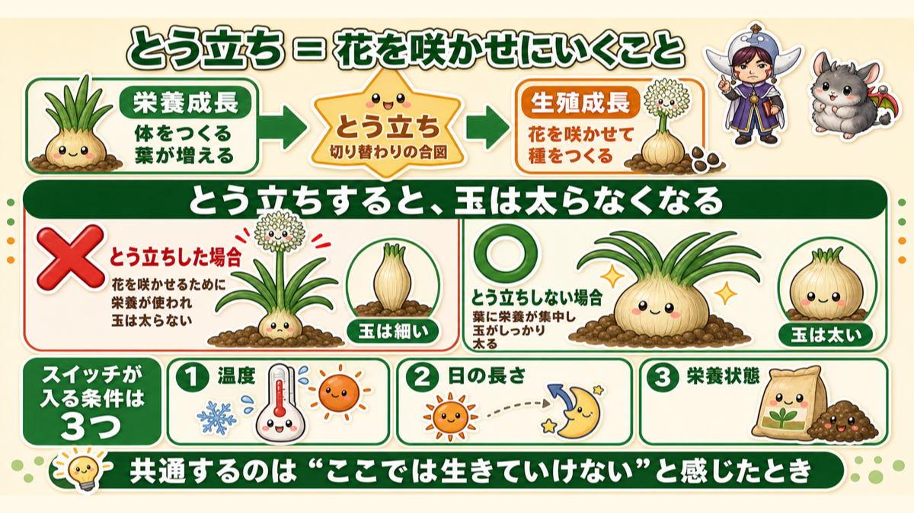
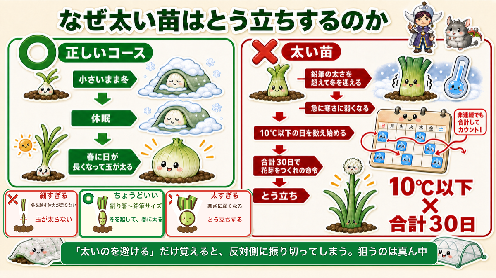
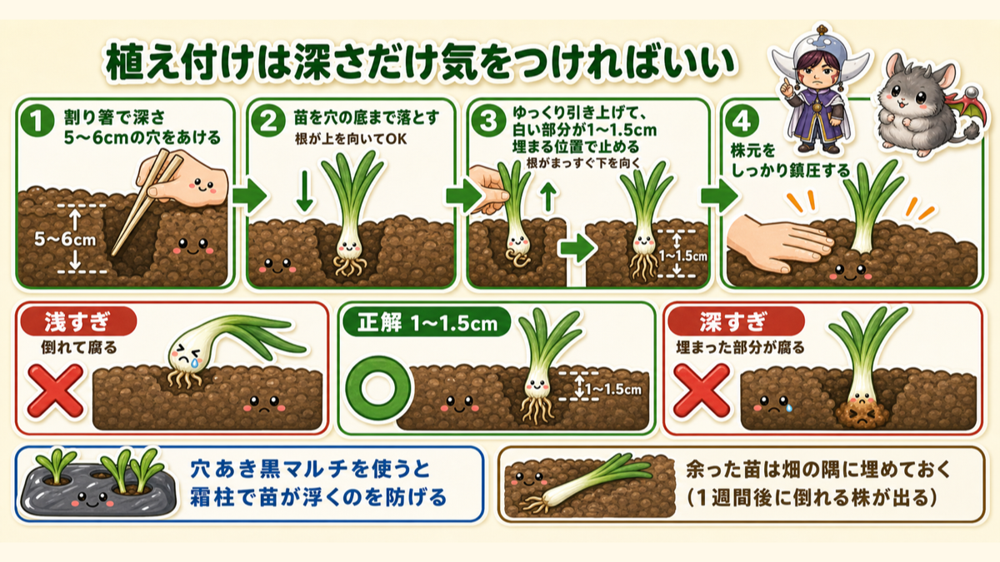
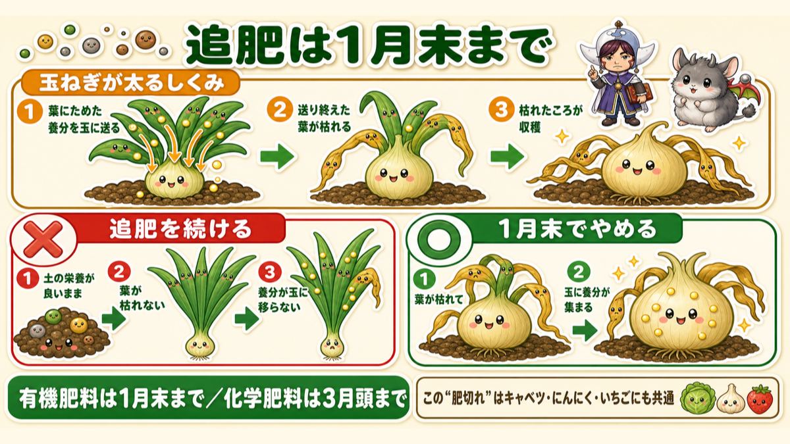

【保存版】玉ねぎは苗選びで9割決まる🧅 太い苗を買ってはいけない理由
🗨️「玉ねぎ、途中でネギ坊主が出てきて終わった」
🗨️「葉は立派なのに、玉が全然大きくならない」
🗨️「苗、どれを買えばいいのか分からない」
どうも、8150（えいこう）です🌱 家庭菜園歴8年、理科の教員免許を持っていて、有機・無農薬で野菜を育てています。
今日は玉ねぎです。11月に植えて、収穫は翌年の5月末〜6月。半年以上つきあう、いちばん長い野菜のひとつですね。
先に、この記事でいちばん言いたいことを言っておきますね。
玉ねぎの失敗は、ほぼ全部「とう立ち」です。そしてその原因は、苗を買う時点で決まっています。
ネギ坊主が出てしまうと、そこで玉は太らなくなります。抜くしかありません。半年待った結果がそれだと、けっこうこたえます。
でも安心してください。避け方はシンプルで、太い苗を選ばないこと。これだけです。
なぜ太いとダメなのか。そこには10℃と30日という、はっきりした数字があります。理由が分かると、苗売り場での迷いがなくなりますよ☺️
※以下の時期は中間地（関東〜関西の平野部）が目安。寒い地域は少し遅らせ、暖かい地域は早めに。種の袋や苗の表示もあわせて確認してください。
📖 この記事の目次
栽培データ
- 科：ヒガンバナ科（仲間＝ニンニク・らっきょう・ネギ。同じ場所は1〜2年あける）
- タネまき：9月上旬〜中旬（苗から始めるならこの工程は不要）
- 植え付け：11月中（早生＝わせは11月中旬まで／中生・晩生＝おくては11月いっぱい。※育つのが早い品種ほど早く植えます）
- 株間：15cm（穴あきマルチの穴に1本ずつ）
まず「とう立ち」を理解すると、全部つながります

とう立ちという言葉、聞いたことはあっても、中身までは知らない方が多いと思います。ここが分かると、この記事の残り全部が「なるほど」に変わるので、先に説明させてください。
とう立ち＝花を咲かせにいくこと
野菜の一生は、大きく2つの時期に分かれています。
- 栄養成長…体をつくる時期。葉を増やして大きくなる
- 生殖成長…子孫を残す時期。花を咲かせて種をつくる
この切り替わりの合図が、とう立ちです。「とう」というのは花芽のついた茎のこと。玉ねぎの場合、3月ごろになると葉の真ん中から、それまでとは明らかに違う元気な茎がにょきっと伸びてきます。先端についているのがネギ坊主ですね。
そしてここが問題です。
とう立ちすると、玉ねぎは玉を太らせるのをやめて、花に全力を注ぎます。
食べたい部分に養分が来なくなるわけです。だから抜くしかない。
スイッチが入る条件は3つ
では、なぜ生殖成長に切り替わるのか。きっかけは3つあります。
- 温度
- 日の長さ
- 栄養状態
共通しているのは、野菜が「このままここにいたら生きていけない」と危険を感じたときだということ。だったら種を残そう、と切り替わるんですね。植物なりの生存戦略です。
なぜ「太い苗」がダメなのか

ここが今日の核心です。
正常なコースはこうです。
- 秋に植えた苗が、小さいまま冬を迎える
- 寒いので休眠する
- 春に、日が長くなって気温も上がってきたのを感じて、玉が太る
問題は、苗が大きすぎる場合です。
寒くなる前に、鉛筆の太さを超えるまで育ってしまった株は、急に寒さに弱くなります。
そして、こんなことを始めます。
10℃以下の日を数え始めて、合計30日に達すると「花芽をつくれ」という命令が出る。
これがとう立ちの正体です。
面白いと思いませんか。玉ねぎは寒い日をカウントしているんです。しかも合計で数えるので、飛び飛びでもかまわない。30日たまったらスイッチが入る。
つまり、太い苗を買うということは、「30日カウントが始まる状態」を自分で買っているのと同じなんですね。
だから、割り箸サイズを選ぶ
苗売り場での結論はこれです。
- ★ベストは割り箸くらい、それもやや細めのもの
- 鉛筆サイズでもOK（初心者はむしろ植えやすい）
- 極端に太いものは避ける
ホームセンターでは、太いのと細いのが一緒の束で売られていることがよくあります。「せっかくだから立派なのを」と思って太い束を選びたくなるんですが、そこは我慢してください。
★ただし、細すぎるのもダメです
ここ、私が実際にやらかしたところなので、正直に書いておきます。
「太いとダメなら、細いほうが安全だろう」と思って、鉛筆より細い苗を植えたことがあります。
結果は、玉が十分に大きくなりませんでした。
考えてみれば当たり前で、玉ねぎは冬の間ほとんど成長しません。休眠しているからです。春に一気に太るための体力は、冬に入る前に作っておかないといけない。
苗が小さすぎると、その体力が足りないまま春を迎えます。だから太りきらない。
つまり苗選びは、こういう幅の話なんですね。
- 細すぎる…冬を越す体力が足りず、玉が太らない
- ちょうどいい（割り箸〜鉛筆）…冬を越して、春に太る
- 太すぎる…寒さに弱くなり、とう立ちする
「太いのを避ける」だけ覚えていると、私のように反対側に振り切ってしまいます。狙うのは真ん中です。
すでに太い苗を植えてしまった方へ
大丈夫です。打つ手があります。
とう立ちの条件は「10℃以下が合計30日」でしたよね。ということは、10℃以下に当たる日数を減らせばいい。
不織布や防虫ネットをかけて、少しでも寒さを和らげてやる。それだけで、カウントの進みが遅くなります。100%防げるとは言えませんが、やる価値は十分あります。
理屈が分かっていると、こういう対策が自分で思いつけるようになるんですよね。
植え付けは「深さ」だけ気をつければいい

苗さえ選べれば、あとは植えるだけです。ここもコツは1つだけ。
正解は1〜1.5cm
土に埋める白い部分の長さが、1〜1.5cm。これがベストです。
失敗は2パターンあります。
- 浅すぎる…苗が倒れる。倒れたまま寝ていると、そこから腐ります
- 深すぎる…土に埋まった部分が腐ります
どちらも腐るんですよね。玉ねぎの苗はけっこうデリケートです。
★一度深く入れて、引き上げる
ここ、私がやり方を変えて明らかに良くなったところです。
普通に1cmの穴を掘って植えると、根っこが横や上を向いたまま埋まってしまいます。これだと根の張りが悪い。
なので、こうします。
- ①割り箸で、深さ5〜6cmの穴をあける
- ②苗を、その穴の底まで落とし込む（根が上を向いてしまってOK）
- ③ゆっくり引き上げて、白い部分が1〜1.5cm埋まる位置で止める
- ④株元をしっかり鎮圧する（押さえて土を締める）
この「一度落として引き上げる」という動作で、根がまっすぐ下を向くんです。すると根張りが良くなって、活着（根が土に張って動き出すこと）が早くなります。
割り箸1本でできるので、ぜひ試してみてください。ちなみに苗を選ぶときの太さの基準も割り箸なので、1本持って売り場に行くと便利ですよ☺️
④の鎮圧も省略しないでください。根と土が密着していないと、根の張り出しが遅れます。
穴あきマルチをおすすめします
雑草対策もありますが、いちばんの理由は霜柱です。
冬にマルチなしで育てていると、霜柱が立って苗が持ち上がってしまいます。根が浮くと枯れます。マルチを張っておくと、これを防げます。
穴の間隔がそのまま株間になるので、測る手間もなくなります。
元肥は、葉物より多めに
玉ねぎは半年以上かかる長丁場です。なので元肥はしっかり入れておきます。
1平方メートルあたり、牛ふん3L・鶏ふん200cc・油かす100ccが目安です。ほかの葉物と比べると多めですが、これでちょうどいいくらいです。
★余った苗は、捨てないでください
これ、知らないと損します。
玉ねぎは、植えて1週間ほどすると、腐って倒れる株がいくつか出ます。どれだけ丁寧に植えても、一定数は出ます。
なので、余った苗は畑の隅に埋めておいてください。まとめてで構いません。根の白い部分を土に入れておくだけです。
倒れた株が出たら、そこから1本抜いて植え直す。これで穴が空きません。
苗を買ったけど畑の準備が間に合わない、という場合も同じです。この「仮植え」をしておけば、苗を傷めずに待てます。
追肥は1月末でやめてください

これも理由を知らないとやってしまう失敗です。
春になって「もっと大きくしたい」と追肥を続けると、玉が太らなくなります。
玉ねぎは「枯れることで」太る
順を追って説明しますね。
玉ねぎが太るしくみは、葉にためた養分を玉に送り込むことです。そして養分を送り終えた葉は、役目を終えて枯れます。
玉ねぎの収穫時期の目安が「葉が倒れて枯れたころ」なのは、これが理由です。枯れたということは、養分を全部玉に渡し終えたということなんですね。
ここで追肥を続けるとどうなるか。
土の栄養状態がずっと良いままなので、葉が「もう終わりだ」という信号を受け取れません。すると葉はいつまでも元気なまま。養分が玉に移らない。
結果、葉ばかり立派で玉が小さい、という状態になります。
やめる時期の目安
- 有機肥料なら、1月末まで。それ以降は入れない
- 化学肥料なら、3月頭まで
有機のほうが早いのは、分解に時間がかかるからです。1月末に入れたものが効いてくるのが、ちょうど春先になります。
このわざと栄養を切らすことを、「肥切れ」といいます。玉ねぎには必要な工程なんですね。
これは玉ねぎだけの話ではありません
同じしくみが、冬を越す野菜すべてに当てはまります。
キャベツ、にんにく、いちご。どれも「太い苗はとう立ちしやすい」「追肥を引っ張りすぎない」が共通します。
なので今日の話は、玉ねぎ1つ覚えれば、そのまま他にも応用できます。おトクな知識だと思います。
冬に葉が枯れてきても、慌てない
12月〜1月、葉が黄色くなって枯れてくることがあります。
これは正常です。葉の養分を根にためて、春を待っている状態なんですね。
ただし1つだけ注意点があります。
全部の葉が枯れてしまうのはNGです。
そこまでいくと、春に立ち上がる力が残りません。そうなる前に、不織布や防虫ネットをかけて保温してください。そうすれば春に新しい葉が出てきます。
「枯れてきた＝失敗」ではなく、「全部枯れそう＝手を打つ」と覚えておくといいです。
学ぶ：玉ねぎの「玉」は何者なのか🔬
理科の時間です。
玉ねぎの丸い部分、あれは何だと思いますか。根っこでしょうか。実でしょうか。
答えは、葉です。
正確には、養分をためて太った葉の根元の部分。玉ねぎを縦に切ると、層になっているのが見えますよね。あの1枚1枚が、葉の付け根なんです。
証拠があります。玉ねぎを切ったとき、いちばん下に平べったい部分がありますよね。ヒゲ根が生えている、少し硬いところ。あれが本当の茎で、専門的には「盤茎」といいます。
つまり玉ねぎの構造は、こうなっています。
- いちばん下の平たい部分…茎（ここから根が出る）
- その上に重なっている層…葉の根元（食べるところ）
- 上に伸びている緑の部分…葉
葉が根元で太った野菜、というわけですね。
そう考えると、追肥をやめる理由もすっきりします。玉ねぎにとって玉は、次の世代のための貯金なんです。葉を枯らして、貯金を全部そこに移す。その貯金を横取りして食べている、ということになりますね。
お子さんと一緒なら、玉ねぎを縦に切ってみてください。層が下の平たい部分から生えているのが見えます。「ここが茎だよ」と教えると、あの丸いものの正体が一気に分かります。
ついでに、玉ねぎを切ると涙が出る理由も。あれは切られたときに出る成分が、目に届いて刺激するからです。虫や動物に食べられないための防御なんですね。冷やしてから切ると涙が出にくいのは、成分が飛びにくくなるからです。これも実験できますよ☺️
まとめ
ここまで読んでくださって、ありがとうございます！
玉ねぎは長くつきあう野菜ですが、山場は最初の1日だけです。
- 玉ねぎの失敗はほぼ「とう立ち」。原因は苗を買う時点で決まっている
- 太い苗は寒さに弱くなり、10℃以下が合計30日でとう立ちのスイッチが入る
- だから割り箸サイズ（やや細め）を選ぶ。太すぎるととう立ち、細すぎると玉が太らない
- 植える深さは1〜1.5cm。5cmの穴に落として引き上げると根がまっすぐ下を向く
- 追肥は有機なら1月末まで。続けると葉が枯れず、玉が太らない
- 余った苗は畑の隅に埋めておく。1週間後に倒れる株が出るので、そこから補植
まずは苗売り場で、束の太さを見比べるところからです。割り箸を1本持っていくと、迷いません。それだけで今年の玉ねぎは、かなり変わりますよ🧅
次回は毎月の定期便、10月号です。10月の主役いちごを、なぜ「埋めてはいけない」のかまで踏み込みます🍓
玉ねぎ苗（中晩生 ネオアース）
記事で「太すぎる苗を買ってはいけない」と書きましたが、逆に細すぎても大きくなりません。中晩生は保存がきくので、6月に穫って年明けまで食べられます。100本あれば家族の1年ぶんです。
![[商品価格に関しましては、リンクが作成された時点と現時点で情報が変更されている場合がございます。]](https://hbb.afl.rakuten.co.jp/hgb/56d218b8.a80573a6.56d218b9.1d398fba/?me_id=1241438&item_id=10055324&pc=https%3A%2F%2Fthumbnail.image.rakuten.co.jp%2F%400_mall%2Fnogyoya%2Fcabinet%2F03498327%2Fimg60507283.jpg%3F_ex%3D240x240&s=240x240&t=picttext "[商品価格に関しましては、リンクが作成された時点と現時点で情報が変更されている場合がございます。]")

穴あき黒マルチ（15cm間隔）
玉ねぎは株間15cmでびっしり植えます。この穴あきマルチなら、間隔を測らずに植えられるので、100本植えてもあっという間です。にんにくとも共用できます。
![[商品価格に関しましては、リンクが作成された時点と現時点で情報が変更されている場合がございます。]](https://hbb.afl.rakuten.co.jp/hgb/55521906.a3595d78.55521907.92994d18/?me_id=1225177&item_id=10035007&pc=https%3A%2F%2Fthumbnail.image.rakuten.co.jp%2F%400_mall%2Fssn%2Fcabinet%2F02584092%2F07223762%2F4980356008386_1.jpg%3F_ex%3D240x240&s=240x240&t=picttext "[商品価格に関しましては、リンクが作成された時点と現時点で情報が変更されている場合がございます。]")
不織布
小さい苗を植えた方、植えるのが遅れた方は、霜柱で苗が浮きます。不織布は換気がいらないので、かけっぱなしにできるのが強みです。
![[商品価格に関しましては、リンクが作成された時点と現時点で情報が変更されている場合がございます。]](https://hbb.afl.rakuten.co.jp/hgb/56bc237a.e97551b1.56bc237b.2513ed10/?me_id=1310260&item_id=10000879&pc=https%3A%2F%2Fthumbnail.image.rakuten.co.jp%2F%400_mall%2Fdiokasei%2Fcabinet%2F007fusyokufu%2F12g%2Fimgrc0092049705.jpg%3F_ex%3D240x240&s=240x240&t=picttext "[商品価格に関しましては、リンクが作成された時点と現時点で情報が変更されている場合がございます。]")